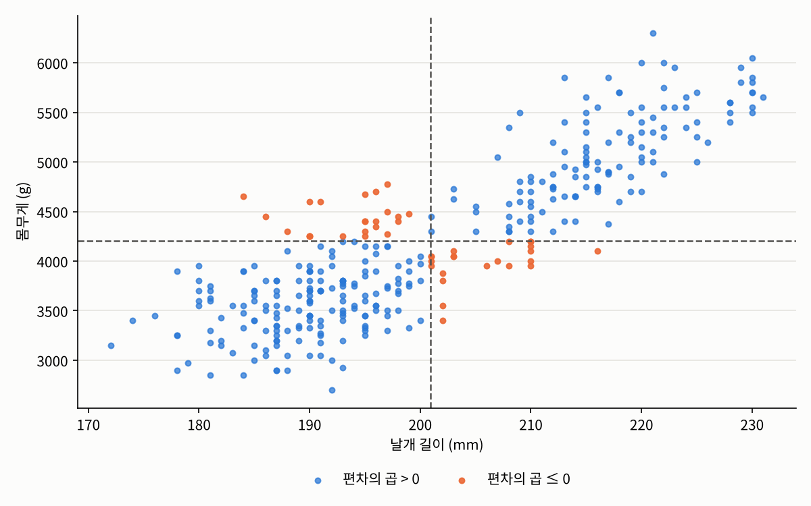
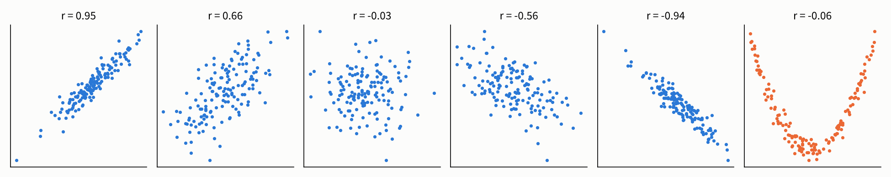
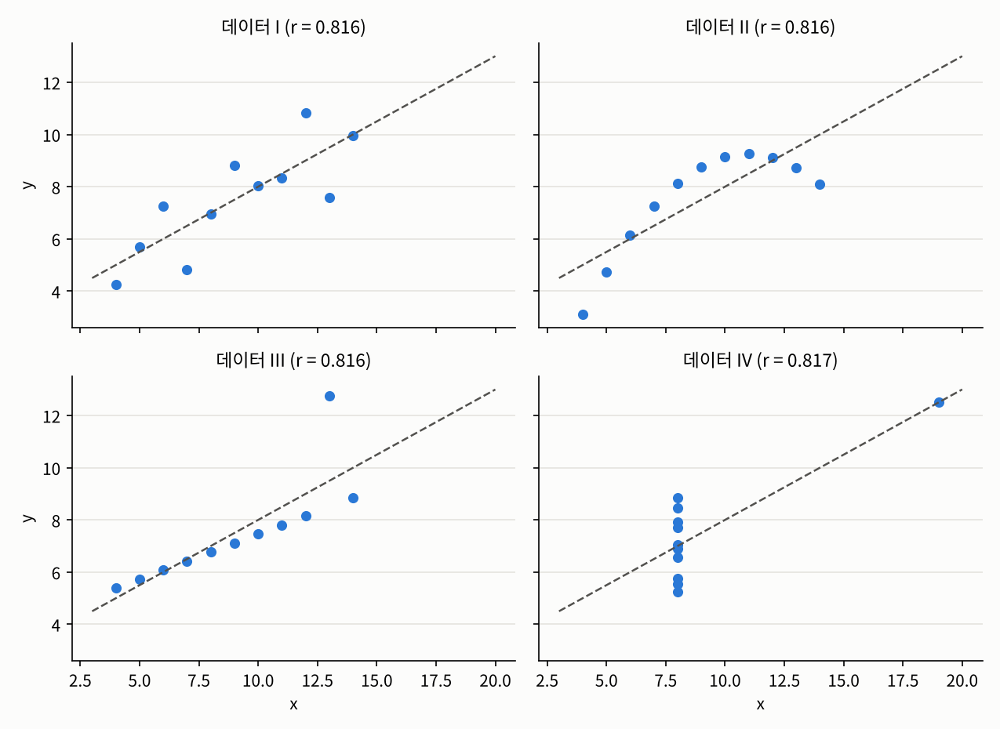

4.2 산점도와 상관계수
4장 두 변수 사이의 관계 · 함께 움직이는 정도를 재기
들어가며
지난 글에서는 두 범주형 변수의 관계를 분할표로 보았습니다. 이번 글에서는 두 변수가 모두 수치형인 경우를 다룹니다.
먼저 두 변수를 한 그림에 나타내는 산점도를 그리고, 산점도에서 보이는 “함께 움직이는 경향”을 숫자로 바꾸는 과정을 따라가 공분산과 상관계수를 정의합니다. 상관계수의 성질을 증명한 뒤, 상관계수 하나만 믿으면 어떤 함정에 빠지는지 유명한 예로 확인하겠습니다.
산점도
날개가 긴 펭귄은 몸무게도 더 나갈까요? 이 질문에 답하는 가장 직접적인 방법은 각 펭귄을 (날개 길이, 몸무게)라는 점 하나로 보고 평면에 찍어 보는 것입니다. 이런 그림을 산점도(scatter plot)라고 합니다.

점들이 왼쪽 아래에서 오른쪽 위로 뻗은 띠 모양을 이룹니다. 날개가 긴 펭귄일수록 대체로 무겁다는 뜻입니다. 이렇게 한 변수가 클 때 다른 변수도 큰 경향을 양의 관계, 한 변수가 클 때 다른 변수가 작은 경향을 음의 관계라고 합니다.
편차의 곱으로 함께 움직임 재기
산점도에서 보이는 경향을 숫자로 바꿔 보겠습니다. 위 그림에서 회색 점선은 날개 길이의 평균 \(\bar{x}\)와 몸무게의 평균 \(\bar{y}\)입니다. 이 두 선이 평면을 네 칸으로 나눕니다.
- 오른쪽 위: 날개도 평균보다 길고 몸무게도 평균보다 무겁습니다. 두 편차 \(x_i - \bar{x}\)와 \(y_i - \bar{y}\)가 모두 양수이니 곱은 양수입니다.
- 왼쪽 아래: 둘 다 평균보다 작습니다. 두 편차가 모두 음수이니 곱은 역시 양수입니다.
- 왼쪽 위와 오른쪽 아래: 한쪽은 평균보다 크고 다른 쪽은 작습니다. 곱은 음수입니다.
양의 관계가 있다면 대부분의 점이 오른쪽 위와 왼쪽 아래에 있을 것이고, 편차의 곱을 모두 더하면 큰 양수가 됩니다. 음의 관계라면 큰 음수가 되고, 관계가 없다면 네 칸에 점이 고르게 흩어져 양수와 음수가 상쇄될 것입니다. 실제로 위 그림에서 편차의 곱이 양수인 점(파랑)은 342개 중 297개입니다.
이 아이디어를 그대로 정의로 옮긴 것이 공분산입니다.
\(y\) 자리에 \(x\)를 넣으면 \(s_{xx} = s_x^2\), 즉 3.2의 표본 분산이 됩니다. 공분산은 분산을 두 변수로 넓힌 것이고, \(n-1\)로 나누는 이유도 분산과 같습니다.
공분산의 문제: 단위
공분산의 부호는 관계의 방향을 알려 주지만, 크기는 해석하기 어렵습니다. 직접 계산해 보겠습니다.
import numpy as np
import seaborn as sns
penguins = sns.load_dataset("penguins").dropna(subset=["flipper_length_mm", "body_mass_g"])
x = penguins["flipper_length_mm"].to_numpy()
y = penguins["body_mass_g"].to_numpy()
n = x.size
s_xy = np.sum((x - x.mean()) * (y - y.mean())) / (n - 1)
r = s_xy / (x.std(ddof=1) * y.std(ddof=1))
print(f"n = {n}")
print(f"공분산 (mm·g) : {s_xy:.1f}")
print(f"공분산 (cm·kg) : {np.sum((x/10 - (x/10).mean()) * (y/1000 - (y/1000).mean())) / (n - 1):.4f}")
print(f"상관계수 : {r:.4f}")
print(f"np.corrcoef로 확인 : {np.corrcoef(x, y)[0, 1]:.4f}")n = 342
공분산 (mm·g) : 9824.4
공분산 (cm·kg) : 0.9824
상관계수 : 0.8712
np.corrcoef로 확인 : 0.8712같은 데이터인데, 날개를 mm, 몸무게를 g으로 재면 공분산은 9824.4이고, cm와 kg으로 재면 0.9824입니다. 단위를 바꿨을 뿐인데 10000배 차이가 납니다. 공분산의 단위가 “mm·g”처럼 두 단위의 곱이기 때문입니다. 그래서 공분산의 크기만 보고는 관계가 강한지 약한지 판단할 수 없습니다.
해결책은 3.3에서 본 표준화입니다. 각 변수를 표준편차로 나누어 단위를 없애면 됩니다.
피어슨 상관계수
z-점수 \(z_i^{(x)} = (x_i - \bar{x})/s_x\), \(z_i^{(y)} = (y_i - \bar{y})/s_y\)를 쓰면 \(r = \frac{1}{n-1}\sum_i z_i^{(x)} z_i^{(y)}\)입니다. 상관계수는 두 변수를 표준화한 뒤 구한 공분산인 셈입니다. 위 펭귄 데이터의 상관계수는 0.8712이고, 단위를 어떻게 바꿔도 이 값은 같습니다. 이것이 다음 정리의 세 번째 성질입니다.
세 성질을 쉬운 말로 정리하면 이렇습니다. 상관계수는 항상 \(-1\)과 \(1\) 사이에 있고, 양 끝인 \(\pm 1\)은 모든 점이 정확히 한 직선 위에 있을 때만 나옵니다. 그리고 단위를 바꾸거나 기준점을 옮겨도 값이 변하지 않습니다(방향을 뒤집으면 부호만 바뀝니다). 그래서 상관계수는 단위가 다른 여러 변수 쌍의 관계를 같은 잣대로 비교할 수 있게 해 줍니다.
상관계수 읽기
상관계수의 크기에 대한 감을 잡기 위해, 상관계수가 서로 다른 가상의 데이터를 그려 보겠습니다.

\(|r|\)이 1에 가까울수록 점들이 직선 주위에 좁게 모이고, 0에 가까울수록 방향 없이 흩어집니다. 흔히 쓰는 대략적인 기준으로 \(|r|\)이 0.8 근처이면 꽤 강한 직선 관계, 0.3 근처이면 약한 직선 관계라고 말하기도 합니다. 다만 이런 기준은 분야마다 다릅니다. 물리 실험에서 0.8은 낮은 편일 수 있고, 사회과학 설문에서 0.3은 의미 있는 관계일 수 있습니다.
펭귄 데이터의 수치형 변수 네 개 사이의 상관계수를 한꺼번에 계산하면 다음과 같습니다. 이런 표를 상관행렬(correlation matrix)이라고 합니다.
import pandas as pd
import seaborn as sns
pd.set_option("display.width", 120)
pd.set_option("display.max_columns", None)
penguins = sns.load_dataset("penguins")
cols = ["bill_length_mm", "bill_depth_mm", "flipper_length_mm", "body_mass_g"]
print(penguins[cols].corr().round(3)) bill_length_mm bill_depth_mm flipper_length_mm body_mass_g
bill_length_mm 1.000 -0.235 0.656 0.595
bill_depth_mm -0.235 1.000 -0.584 -0.472
flipper_length_mm 0.656 -0.584 1.000 0.871
body_mass_g 0.595 -0.472 0.871 1.000대각선은 변수와 자기 자신의 상관계수이니 모두 1이고, 표는 대각선을 기준으로 대칭입니다. 날개 길이와 몸무게(0.871)가 가장 강한 양의 상관을 보입니다. 그런데 부리 깊이는 다른 세 변수와 모두 음의 상관을 보입니다. 부리가 깊은 펭귄일수록 부리가 짧고 날개가 짧고 가볍다는 뜻일까요? 이 수상한 결과는 4.4에서 다시 들여다보겠습니다.
상관계수는 직선만 봅니다
위 그림의 마지막 데이터를 다시 보세요. 점들이 U자 곡선을 아주 뚜렷하게 그리고 있으니, 두 변수 사이에는 분명히 강한 관계가 있습니다. \(x\)를 알면 \(y\)를 꽤 정확하게 맞힐 수 있으니까요. 그런데 상관계수는 \(-0.06\)으로 거의 0입니다.
정리 4.2.3이 이유를 말해 줍니다. 상관계수는 점들이 직선에 얼마나 가까운지를 재는 숫자입니다. U자 모양에서는 왼쪽 절반의 음의 경향과 오른쪽 절반의 양의 경향이 상쇄되어, 직선으로 요약할 수 있는 관계가 거의 남지 않습니다. 그래서 상관계수가 0이라는 것은 “직선 관계가 없다”는 뜻이지 “관계가 없다”는 뜻이 아닙니다.
앤스콤 콰르텟
상관계수만 믿으면 안 된다는 것을 보여 주는 가장 유명한 예가 통계학자 프랜시스 앤스콤(Francis Anscombe)이 1973년에 만든 네 개의 데이터, 앤스콤 콰르텟(Anscombe’s quartet)입니다.1 시본에 들어 있으니 바로 확인해 보겠습니다.
import seaborn as sns
anscombe = sns.load_dataset("anscombe")
for name, d in anscombe.groupby("dataset"):
print(f"{name:>3}: x 평균 {d.x.mean():.2f}, y 평균 {d.y.mean():.2f}, "
f"x 표준편차 {d.x.std():.2f}, y 표준편차 {d.y.std():.2f}, 상관계수 {d.x.corr(d.y):.3f}") I: x 평균 9.00, y 평균 7.50, x 표준편차 3.32, y 표준편차 2.03, 상관계수 0.816
II: x 평균 9.00, y 평균 7.50, x 표준편차 3.32, y 표준편차 2.03, 상관계수 0.816
III: x 평균 9.00, y 평균 7.50, x 표준편차 3.32, y 표준편차 2.03, 상관계수 0.816
IV: x 평균 9.00, y 평균 7.50, x 표준편차 3.32, y 표준편차 2.03, 상관계수 0.817네 데이터의 평균, 표준편차, 상관계수가 소수점 둘째 자리까지 거의 똑같습니다. 숫자만 보면 네 데이터는 사실상 같은 데이터입니다. 그런데 그림을 그리면 이야기가 완전히 달라집니다.

- 데이터 I은 직선 관계에 잡음이 섞인 평범한 데이터로, 상관계수가 의도한 대로 작동하는 경우입니다.
- 데이터 II는 완벽한 곡선 관계입니다. 직선이 아니라 곡선으로 요약해야 합니다.
- 데이터 III은 점 하나만 빼면 완벽한 직선입니다. 그 점 하나가 상관계수를 1에서 0.816으로 끌어내렸습니다.
- 데이터 IV는 점 하나를 빼면 \(x\)가 모두 같아서 관계를 말할 수조차 없습니다. 동떨어진 점 하나가 상관계수 0.817을 혼자서 만들어 냈습니다.
III과 IV는 3.4의 이야기와 같습니다. 상관계수는 평균과 표준편차로 만든 숫자이므로, 동떨어진 점 하나에 크게 흔들립니다. 앤스콤의 메시지는 분명합니다. 숫자를 계산하기 전에, 반드시 그림을 그려 보라.
정리
이번 글에서는 두 수치형 변수의 관계를 보는 방법을 다루었습니다.
- 산점도는 두 변수를 평면 위의 점으로 나타내 관계의 방향과 모양을 보여 줍니다.
- 두 편차의 곱을 평균 낸 공분산은 관계의 방향을 알려 주지만, 크기가 단위에 따라 달라집니다.
- 두 변수를 표준화한 공분산인 피어슨 상관계수 \(r\)은 \(-1\)과 \(1\) 사이에 있고, \(\pm 1\)은 모든 점이 한 직선 위에 있을 때만 나오며, 단위에 영향을 받지 않습니다.
- 상관계수는 직선 관계의 강도만 잽니다. 강한 곡선 관계도 상관계수가 0일 수 있고, 동떨어진 점 하나가 상관계수를 크게 바꿀 수 있습니다. 앤스콤 콰르텟처럼 숫자가 같아도 전혀 다른 데이터가 있으니 그림이 먼저입니다.
상관계수가 동떨어진 점에 약하고 직선 관계만 본다는 약점은, 3장에서 평균 대신 중앙값을 썼던 것처럼 값 대신 순위를 쓰면 상당 부분 해결됩니다. 다음 글에서는 순위로 관계를 재는 방법을 다루겠습니다.
연결되는 개념
- \(\leftarrow\) 이전 개념: 4.1 분할표와 조건부 상대도수
- \(\rightarrow\) 다음 개념: 4.3 순위 상관
Footnotes
F. J. Anscombe, “Graphs in Statistical Analysis”, The American Statistician 27(1), 1973, pp. 17–21.↩︎